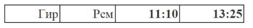
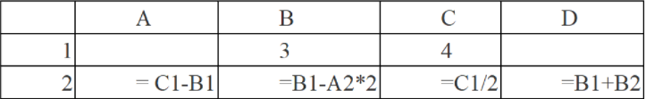
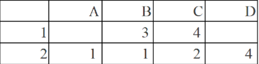
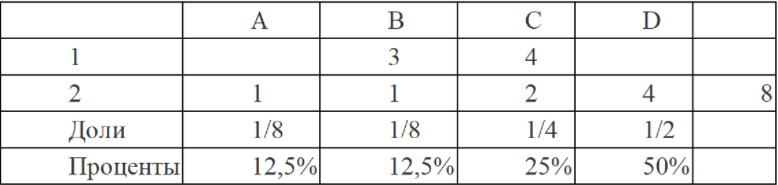
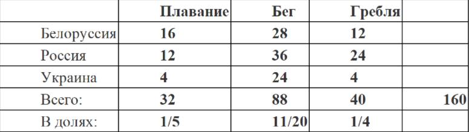

Создание компьютерных информационных моделей
-
Понятие: моделирование
1. Что такое модель, моделирование?
2. С какими основными видами моделей мы познакомились?
Понятие: графы
1. Что такое граф?
2. Назовите элементы графа. Как они изображаются?
4.Что изображается в виде вершины графа? В виде линий?
Понятие: таблицы
1. Чем характеризуется таблица? Виды таблиц?
2. Таблица "Объект-свойство".
3. Таблица "Объект-объект".
Что такое диаграмма? Для чего они нужны?
Что такое элементы и маркеры данных?
1. Особенности их применения.
III. Подготовка учащихся к работе на основном этапе
В кодификаторе элементов содержания по информатике для составлени раздел «Моделирование и компьютерный эксперимент» конкретизирован следующим образом:
Моделирование и компьютерный эксперимент
См. приложение 1, слайд 3.
Рассмотрим такой пример.
Укажите верное утверждение:
· Статическая модель системы описывает ее состояние, а динамическая — поведение.
· Динамическая модель системы описывает ее состояние, а статическая — поведение.
· Динамическая модель системы всегда представляется в виде формул или графиков.
· Статическая модель системы всегда представляется в виде формул или графиков.
Верным в этом задании является утверждение 1.
См. приложение 1, слайд 6.
Задание 2. Какой из приведенных ниже графиков лучше всего описывает зависимость размера архива от размера исходного файла?
См. приложение 1, слайд 7
Содержательно задача относится к разделу «Программные средства ИКТ. Архиваторы», но здесь проверяется и умение работать с графическими моделями.
Общие рекомендации по решению таких заданий следующие:
1. Не обращаясь пока к графикам, выделить ключевые слова в формулировке задания. В рассмотренном примере это будет «зависимость размера архива от размера исходного файла».
2. Сформулировать словами эту зависимость в самом общем виде. В рассмотренном примере: «Для одного и того же архиватора — чем больше файл, тем больше архив».
3. Обратившись к графикам, проанализировать названия осей. В рассмотренном примере: ось X — «Размер файла», ось Y — «Размер архива».
4. Проанализировать зависимости, представленные на графиках, и выразить их словами.
В рассмотренном примере:
· на первом графике — «при увеличении размера файла увеличивается размер архива»;
· на втором графике — «при увеличении размера файла размер архива остается постоянным (не изменяется)»;
· на третьем графике — «при увеличении размера файла уменьшается размер архива»;
· на четвертом графике — «при увеличении размера файла размер архива колеблется — то увеличивается, то уменьшается».
5. Сделать выбор варианта ответа. В рассмотренном примере — 1. Наиболее важный пункт в представленном алгоритме — второй. Умение вербализовать знания важно с точки зрения развития мышления. Если этот этап пропустить, то графические образы могут вызвать дополнительные ассоциации, отвлечь от сути задания, что может привести к выбору неверного ответа даже в случае, если вы знаете материал.
Задание 3. В 2005—2007 гг. задания были связаны с умением перейти от табличной формы представления данных к графовой и обратно.
Задача 1. Пример 2006 г.
В таблице приведена стоимость перевозок между соседними железнодорожными станциями. Укажите схему, соответствующую таблице.
См. приложение 1, слайды 9,10.
Общие методические рекомендации по решению заданий такого рода.
1. Не надо пытаться рисовать граф по таблице.
Таблица определяет только количество вершин и наличие связей между ними, но не определяет взаимное расположение вершин. Нарисовав «свой» граф по таблице, ученик может и не найти его среди вариантов ответа.
Примером являются следующие два графа, которые внешне различны, но при этом описываются одной и той же таблицей:
2. Проводим первичный анализ таблицы: определяем, со сколькими вершинами связана каждая из вершин. Для этого достаточно подсчитать количество непустых клеток в каждой строке (столбце).
Количество связей: у А — 3, у В — 2, у С — 2, y D — 1,у Е — 2.
3. Анализируем варианты ответов и отбрасываем те из них, которые не соответствуют этим значениям.
В задании 2006 г. это ответ 4 (тоже по вершине В). Осталось проанализировать три варианта ответа — 1, 2, 3.
4. Анализируем оставшиеся графы и проверяем соответствие ребер вершинам. В задании 2006 г.: в ответе 3 вершина Е соединена с вершинами А и D, а по таблице должна быть соединена с вершинами А и С.
В обоих заданиях осталось выбрать один ответ из двух.
5. Проверяем числовые характеристики ребер в оставшихся вариантах ответов.
Делаем окончательный выбор.
В задании 2006 г.: ответ 2 (по вершине А).
6. В качестве проверки (особенно в случае сомнений) по графу выбранного варианта ответа строим таблицу. Она строится по графу однозначно, и это точно позволит избежать ошибки.
Задача 2. Пример 2007 г. (модификация условия заключается в том, что для поиска ответа целесообразно построить граф по таблице).
Таблица стоимости перевозок устроена следующим образом: числа, стоящие на пересечениях строк и столбцов таблиц, означают стоимость проезда между соответствующими соседними станциями. Если пересечение строки и столбца пусто, то станции не являются соседними. Укажите таблицу, для которой выполняется условие: «Минимальная стоимость проезда из А в В не больше 6».
Стоимость проезда по маршруту складывается из стоимостей проезда между соответствующими соседними станциями.
См. приложение 1, слайды 11-12.
Обратите внимание на то, что «путь минимальной стоимости (длины, времени и т. д.)» и «путь, проходящий через минимальное количество вершин» — это не одно и то же.
Если вы внимательны и аккуратны, то ответ можно найти и без построения графов — достаточно тщательно проанализировать таблицы. Но, учитывая дефицит времени и стрессовое состояние на экзамене, лучше воспользоваться формальным способом решения.
1. Для каждой таблицы строим свой граф, отмечая веса ребер.
2. Определяем возможные пути из начальной вершины (А) в конечную (В) и подсчитываем их стоимость.
Заметим, что при небольшой тренировке построение графов и их анализ займут не больше времени, чем тщательный анализ таблиц, а вероятность допустить ошибку меньше.
Задача 3.
В демо-версии 2008 г. особенность заключалась в том, что граф надо было построить не по таблице, а по словесному описанию. При этом ребра имели не по одной, а по две характеристики — расстояние и время движения, зависящее от качества дороги.
Пример 2008 г.
Грунтовая дорога проходит последовательно через населенные пункты А, В, С, D. При этом длина дороги между А и В равна 80 км, между В и С — 50 км, между С и D — 10 км. Между А и С построили новое асфальтовое шоссе длиной 40 км.
Оцените минимально возможное время движения велосипедиста из пункта А в пункт В, если его скорость по грунтовой дороге — 20 км/ч, по шоссе — 40 км/ч.
1. 1 час
2. 1,5 часа
3. 3,5 часа
4. 4 часа См. приложение 1, слайды 13-14.
При решении задач подобного рода целесообразно отмечать ребра разного «качества» разными графическими образами (например, сплошной, пунктирной, волнистой линиями).
1. Строим граф на основании данных условия задачи:
2. Определяем возможные пути из начальной вершины (А) в конечную (В). Их всего два: А — В (80 км грунтовой дороги) и А — С — В (40 км асфальтовой дороги и 50 км грунтовой).
3. Для каждого пути рассчитываем время движения:
Ответ. Минимально возможное время движения велосипедиста из пункта А в пункт В — 3,5 ч (вариант 3).
Задача 4.
Между четырьмя железнодорожными станциями — Гир, Map, Рем, Тул — ежедневно выполняют рейсы электрички. Известно расписание движения.
Турист находится на станции Гир в час ночи (01:00). Определите самое раннее время, когда он сможет оказаться на станции Тул.*
1. 14:30
2. 14:45
3. 15:00
4. 15:15
Конечно, простая внимательность и наблюдательность могут помочь найти правильный ответ и без применения приемов моделирования. Но лучше построить схему по таблице, отмечая только те данные, которые соответствуют заданию.
См. приложение 1, слайды 15-16.
Итак, туристу надо ехать через Рем, и тогда он будет в Туле в 14:30. При составлении схемы важно проследить, чтобы время прибытия на промежуточный пункт не превышало времени отправления.
Например, если бы в расписании третья строка была такой:

то туристу лучше было бы добираться через Map и ответ был бы 14:45.
В качестве проверки можно для каждого варианта ответа, начиная с наиболее раннего по времени и далее по возрастанию времени:
· найти соответствующее значение в последнем столбце таблицы;
· попробовать восстановить путь от этого пункта к исходному;
· если такой вариант возможен и нет никаких накладок со временем прибытия-отправления, то этот вариант и будет правильным ответом.
Задание 4. Задачи на построение и анализ диаграмм.
Общий подход к решению задач подобного вида состоит в построении таблиц числовых значений по приведенным в условии формулам, диаграммам или графикам зависимости.
Конечно, при хороших навыках устного счета суммарные величины можно посчитать и «в уме», но построение таблицы позволит уменьшить вероятность ошибки.
Задача 1 (2008 г.).
Дан фрагмент электронной таблицы. После выполнения вычислений была построена диаграмма по значениям диапазона ячеек A2:D2. Укажите получившуюся диаграмму.

См. приложение 1, слайды 18-19.
Рекомендации по решению задачи.
1. Вычисляем значения формул и строим таблицу числовых значений:

Для таких простых значений данный этап необязателен, но в общем случае (особенно когда используются круговые диаграммы) рекомендуется определить доли значений в общей сумме (в долях от общей суммы или в процентах, как кому удобнее):

3. Анализируем варианты ответов:
· 2-й и 3-й варианты не подходят, так как на диаграммах представлены две пары одинаковых значений, а у нас только одна пара;
· 1-й вариант не подходит, поскольку в числовом выражении он соответствует значениям 1, 1, 2, 3 (последнее число — 3, вместо нужного 4).
4. Правильный вариант ответа — 4.
Задача 2 (2008 г.).
На диаграмме показано количество участников соревнований по плаванию (П), бегу (Б), гребле (Г) из трех стран.
Какая из диаграмм правильно отражает соотношение участников из всех стран по каждому виду спорта?
См. приложение 1, слайды 20-21.
Решение
1. По данным исходной диаграммы строим таблицу значений. Наименования строк — названия стран; наименования столбцов — виды спорта.
2. Особое внимание обращаем на шкалу измерения (единица деления — 4).
3. Так как в вариантах ответов приведены обобщенные данные по видам спорта, то суммируем данные по столбцам таблицы.
Таблица данных диаграммы в числовом виде будет выглядеть следующим образом:

4. Анализируем полученные суммы:
5. бегунов больше половины всех участников, поэтому 3-й и 4-й варианты ответов не подходят;
6. пловцов меньше, чем гребцов, поэтому 1-й вариант ответа не подходит.
V. Этап контроля и самоконтроля знаний и способов действий.
Давайте проверим наши знания.
Групповая работа.
См. приложение 2, См. приложение 1, слайды 22-32.
Индивидуальная работа.
Индивидуальная тестовая проверочная работа с фронтальной проверкой после выполнения.
См. приложение 3.
VI. Этап коррекции знаний и способов действий
Проверяем выполненную работа, используя проектор.
VIII. Этап подведения итогов занятия
Подводится итог по результатам тестов и ответов учащихся.
Выставляются отметки.
IX. Этап рефлексии
Настало время нам взглянуть на путь, Который пройден был, И вскинуть взор к вершине, Которую стремимся мы достичь. (Дж. Бэдли)
Метод «ОСТРОВА». На большом листе бумаги рисуется карта с изображением островов со следующими названиями: о. Радости, о. Грусти, о. Недоумения, о. Тревоги, о. Ожидания, о. Просветления, о. Воодушевления, о. Удовольствия, о. Наслаждения и др. На карту наносится также Бермудский треугольник.
· Карта островов вывешивается на доске (стене), и каждому участнику взаимодействия предлагается выйти к карте и маркером (фломастером) нарисовать свой кораблик в соответствующем районе карты, который отражает душевное, эмоционально-чувственное состояние участника после состоявшегося взаимодействия.
· После заполнения карта вывешивается на всеобщее обозрение.
Приложение 3
Пройдите тест по вариантам:
|